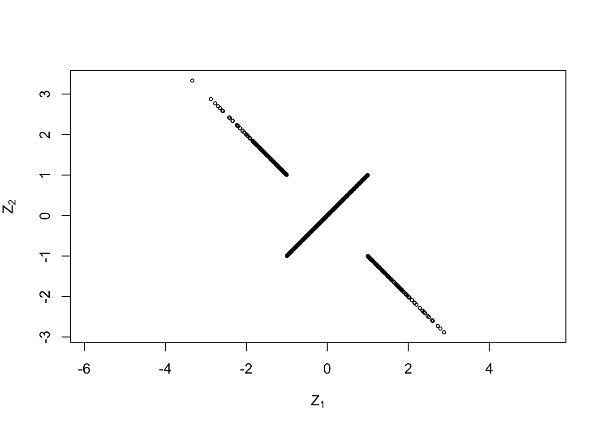

Section 3 Random Vectors and Covariance
Like in the one-dimensional case, we can build a statistical model for the data where we assume that the errors are random. More precisely we will assume \[\begin{equation} Y_i = \beta_0 + \beta_1 x_{i,1} + \cdots + \beta_p x_{i,p} + \varepsilon_i \end{equation}\] for all \(i \in \{1, 2, \ldots, n\}\), where \(\varepsilon_1, \ldots, \varepsilon_n\) are now independent and identically distributed (i.i.d.) random variables with \(\mathbb{E}(\varepsilon_i) = 0\) and \(\mathop{\mathrm{Var}}(\varepsilon_i) = \sigma^2\). As in (2.2), the statistical model can be written in vector form as \[\begin{equation} Y = X \beta + \varepsilon. \tag{3.1} \end{equation}\] This is a vector-valued equation which contains two “random vectors”, \(Y\) and \(\varepsilon\).
A random vector is a vector \(Z = (Z_1, \ldots, Z_n)\) where each component \(Z_i\) is a random variable.
3.1 Expectation
The expectation of a random vector is taken for each component separately. This is formalised in the following definition.
Definition 3.1 Let \(Z = (Z_1, \ldots, Z_n) \in \mathbb{R}^n\) be a random vector. Then the expectation of \(Z\) is the (non-random) vector \[\begin{equation*} \mathbb{E}(X) = \begin{pmatrix} \mathbb{E}(Z_1) \\ \vdots \\ \mathbb{E}(Z_n) \end{pmatrix} \in \mathbb{R}^n. \end{equation*}\]
The same convention is sometimes used for random matrices \(M\), as \(\mathbb{E}(M)_{ij} = \mathbb{E}(M_{ij})\).
Example 3.1 The random vector \(\varepsilon\) in (3.1) has \[\begin{equation*} \mathbb{E}(\varepsilon)_i = \mathbb{E}(\varepsilon_i) = 0 \end{equation*}\] for all \(i \in \{1, \ldots, n\}\) and thus \(\mathbb{E}(\varepsilon) = 0 \in \mathbb{R}^n\), where \(0\) here denotes the zero-vector \((0, \ldots, 0) \in \mathbb{R}^n\).
Since the expectation of a random vector is defined in term of the usual expectation, most rules we know for expectations still hold. For example, if \(Y\) and \(Z\) are two random vectors, we have \(\mathbb{E}(Y+Z) = \mathbb{E}(Y) + \mathbb{E}(Z)\).
Example 3.2 The random vector \(Y\) in (3.1) has \[\begin{equation*} \mathbb{E}(Y)_i = \mathbb{E}(Y_i) = \mathbb{E}\bigl( (X\beta)_i + \varepsilon_i \bigr) = (X\beta)_i + \mathbb{E}(\varepsilon_i) = (X\beta)_i \end{equation*}\] for all \(i \in \{1, \ldots, n\}\) and thus \(\mathbb{E}(Y) = X\beta \in \mathbb{R}^n\). We often will write the above derivation in vector form as \[\begin{equation*} \mathbb{E}(Y) = \mathbb{E}(X\beta + \varepsilon) = X\beta + \mathbb{E}(\varepsilon) = X\beta. \end{equation*}\]
Example 3.3 If \(A \in \mathbb{R}^{m\times n}\) is a matrix and \(Z \in \mathbb{R}^n\) is a random vector, then we find the expectation of \(AZ\in\mathbb{R}^m\) as \[\begin{equation*} \mathbb{E}(AZ)_i = \mathbb{E}(AZ_i) = \mathbb{E}\bigl( \sum_{j=1}^n a_{ij} Z_j \bigr) = \sum_{j=1}^n \mathbb{E}\bigl( a_{ij} Z_j \bigr) = \sum_{j=1}^n a_{ij} \mathbb{E}(Z_j) = \sum_{j=1}^n a_{ij} \mathbb{E}(Z)_j \end{equation*}\] for all \(i \in \{1, \ldots, m\}\) and thus we have \(\mathbb{E}(AZ) = A \mathbb{E}(Z)\).
3.2 Covariance Matrix
The variance of random variables is replaced with the concept of a “covariance matrix” for random vectors.
Definition 3.2 Let \(Z = (Z_1, \ldots, Z_n) \in \mathbb{R}^n\) be a random vector. Then the covariance matrix of \(Z\) is the matrix \(\mathop{\mathrm{Cov}}(Z) \in \mathbb{R}^{n\times n}\) given by \[\begin{equation*} \mathop{\mathrm{Cov}}(Z)_{ij} = \mathop{\mathrm{Cov}}(Z_i, Z_j), \end{equation*}\] for all \(i, j \in \{1, \ldots, n\}\), where \(\mathop{\mathrm{Cov}}(Z_i, Z_j)\) denotes the usual covariance between random variables.
We collect some basic properties of covariance matrices here. Most of these arguments use concepts and rules from linear algebra, as summarised in section A in the appendix.
Since \(\mathop{\mathrm{Cov}}(Z_i, Z_j) = \mathop{\mathrm{Cov}}(Z_j, Z_i)\), covariance matrices are symmetric.
The diagonal elements of \(\mathop{\mathrm{Cov}}(Z)\) are \[\begin{equation} \mathop{\mathrm{Cov}}(Z)_{ii} = \mathop{\mathrm{Cov}}(Z_i, Z_i) = \mathop{\mathrm{Var}}(Z_i). \tag{3.2} \end{equation}\]
If the elements \(Z_i\) of \(Z\) are (statistically) independent, we have \(\mathop{\mathrm{Cov}}(Z_i, Z_j) = 0\) and thus \(\mathop{\mathrm{Cov}}(Z)_{ij} = 0\) for \(i \neq j\). Thus, if \(Z\) is a vector of independent random variables, the covariance matrix of \(Z\) is diagonal.
Let \(\mu = \mathbb{E}(Z) \in \mathbb{R}^n\). If we interpret \(\mu\) as a column vector, then \(M = (Z - \mu) (Z - \mu)^\top\) is an \(n\times n\) matrix and we have \[\begin{equation*} M_{ij} = \bigl( (Z - \mu) (Z - \mu)^\top \bigr)_{ij} = (Z - \mu)_i (Z - \mu)_j. \end{equation*}\] Taking expectations gives \(\mathbb{E}(M_{ij}) = E\bigl( (Z - \mu)_i (Z - \mu)_j \bigr) = \mathop{\mathrm{Cov}}(Z_i, Z_j)\) and thus we can write \[\begin{equation} \mathop{\mathrm{Cov}}(Z) = \mathbb{E}\bigl( (Z - \mu) (Z - \mu)^\top \bigr). \tag{3.3} \end{equation}\]
Covariance matrices are positive semi-definite. To see this, let \(C = \mathop{\mathrm{Cov}}(Z)\) and \(u \in\mathbb{R}^n\) be a vector. We have to show that \(u^\top C u \geq 0\). Writing \(\bar Z := Z - \mathbb{E}(Z)\) as an abbreviation, we get \[\begin{align*} u^\top C u &= u^\top \mathbb{E}\bigl( \bar Z \bar Z^\top \bigr) u \\ &= \mathbb{E}\bigl( u^\top \bar Z \bar Z^\top u \bigr) \\ &= \mathbb{E}\bigl( (\bar Z^\top u)^\top \bar Z^\top u \bigr) \\ &= \mathbb{E}\bigl( \|\bar Z^\top u\|^2 \bigr), \end{align*}\] where \(\|\bar Z^\top u\|\) denotes the Euclidean length of the vector \(\bar Z^\top u\). Since \(\|\bar Z^\top u\|^2 \geq 0\) we find \(u^\top C u \geq 0\). This shows that the covariance matrix \(C\) is positive semi-definite. (Note that, nevertheless, individual elements of the matrix \(C\) can be negative numbers.)
Example 3.4 The random vector \(\varepsilon\) in equation (3.1) has \(\mathbb{E}(\varepsilon) = 0\). We have \(\mathop{\mathrm{Cov}}(\varepsilon)_{ii} = \mathop{\mathrm{Var}}(\varepsilon_i) = \sigma^2\) for all \(i\in\{1, \ldots, n\}\). Since we assumed the \(\varepsilon_i\) to be independent, the covariance matrix is diagonal and we find \[\begin{equation*} \mathop{\mathrm{Cov}}(\varepsilon) = \sigma^2 I, \end{equation*}\] where \(I\) is the \(n\times n\) identity matrix.
An important results about covariance matrices is given in the following lemma, which describes how the covariance matrix changes under affine transformations.
Lemma 3.1 Let \(Z\in\mathbb{R}^n\) be a random vector, \(A\in\mathbb{R}^{m\times n}\) a matrix and \(b\in\mathbb{R}^m\) a vector. Then \[\begin{equation*} \mathop{\mathrm{Cov}}(AZ+b) = A \mathop{\mathrm{Cov}}(Z) A^\top. \end{equation*}\]
Proof. As in equation (3.3), we can write \(\mathop{\mathrm{Cov}}(AZ+b)\) as \[\begin{equation*} \mathop{\mathrm{Cov}}(AZ+b) = \mathbb{E}\bigl( (AZ + b - \mu) (AZ + b - \mu)^\top \bigr), \end{equation*}\] where \(\mu = \mathbb{E}(AZ + b) = \mathbb{E}(AZ) + b\). Thus, \(AZ + b - \mu = AZ - \mathbb{E}(AZ)\) and we find \[\begin{align*} \mathop{\mathrm{Cov}}(AZ+b) &= \mathbb{E}\bigl( (AZ - \mathbb{E}(AZ)) (AZ - \mathbb{E}(AZ))^\top \bigr) \\ &= \mathop{\mathrm{Cov}}(AZ). \end{align*}\] This shows that the covariance matrix ignores non-random shifts.
Furthermore, we have \(AZ - \mathbb{E}(AZ) = AZ - A\mathbb{E}(Z) = A\bigl(Z - \mathbb{E}(Z)\bigr)\). Using equation (3.3) again, we find \[\begin{align*} \mathop{\mathrm{Cov}}(AZ) &= \mathbb{E}\Bigl( \bigl(AZ - \mathbb{E}(AZ)\bigr) \bigl(AZ - \mathbb{E}(AZ)\bigr)^\top \Bigr) \\ &= \mathbb{E}\Bigl( A \bigl(Z - \mathbb{E}(Z)\bigr) \bigl(Z - \mathbb{E}(Z)\bigr)^\top A^\top \Bigr) \\ &= A \mathbb{E}\Bigl( \bigl(Z - \mathbb{E}(Z)\bigr) \bigl(Z - \mathbb{E}(Z)\bigr)^\top \Bigr) A^\top \\ &= A \mathop{\mathrm{Cov}}(Z) A^\top. \end{align*}\] This completes the proof.
3.3 The Multivariate Normal Distribution
Since we assume that the random errors \(\varepsilon_i\) are normally distributed, we will need to understand how vectors of normal distributed random variables behave.
Definition 3.3 A random vector \(Z\in\mathbb{R}^n\) follows a multivariate normal distribution, if \(u^\top Z\) is normally distributed or constant for every vector \(u\in\mathbb{R}^n\).
This definition is takes its slightly surprising form to avoid some boundary cases which I will discuss in an example, below. To understand the definition, a good start is to consider the cases where \(u\) is one of the standard basis vectors, say \(u_i = 1\) and \(u_j = 0\) for all \(j\neq i\). In this case we have \[\begin{equation*} u^\top Z = \sum_{k=1}^n u_k Z_k = Z_i. \end{equation*}\] Thus, if \(Z\) follows a multivariate normal distribution, each of the components \(Z_i\) is normally distributed. Example 3.8, below, shows that the converse is not true.
One can show that a multivariate normal distribution is completely determined by the mean \(\mu = \mathbb{E}(Z)\) and the covariance \(\Sigma = \mathop{\mathrm{Cov}}(Z)\). The distribution of such a \(Z\) is denoted by \(\mathcal{N}(\mu, \Sigma)\). Also, for every \(\mu\in\mathbb{R}^n\) and every positive semi-definite matrix \(\Sigma\in\mathbb{R}^{n\times n}\) there is a random vector \(Z\) which follows a multivariate normal distribution with this mean and covariance.
Example 3.5 Consider the vector \(\varepsilon\) from the model (3.1). This vector has components \(\varepsilon_i \sim \mathcal{N}(0, \sigma^2)\) and by assumption, the componens \(\varepsilon_i\) are independent. For \(u\in\mathbb{R}^n\) we have \[\begin{equation*} u^\top \varepsilon = \sum_{i=1}^n u_i \varepsilon_i. \end{equation*}\] Since this is a sum of independent, one-dimensional, normally distributed random variables, \(u^\top \varepsilon\) is also normally distribution, for every \(u\). (The independence of the \(\varepsilon_i\) is important in this argument.) Thus, \(\varepsilon\) is a normally distributed random vector. We have already seen \(\mathbb{E}(\varepsilon) = 0\) and \(\mathop{\mathrm{Cov}}(\varepsilon) = \sigma^2 I\), and thus \(\varepsilon\sim \mathcal{N}(0, \sigma^2 I)\).
Without proof we state here some properties of the multivariate normal distribution:
If \(Z \sim \mathcal{N}(\mu, \Sigma)\) and \(a \in \mathbb{R}^n\), then \(Z + a \sim \mathcal{N}(\mu + a, \Sigma)\).
If \(Z \sim \mathcal{N}(\mu, \Sigma)\) and \(A \in \mathbb{R}^{m\times n}\), then \(AZ \sim \mathcal{N}(A\mu, A\Sigma A^\top)\).
If \(Z_1 \sim \mathcal{N}(\mu_1, \Sigma_1)\) and \(Z_2 \sim \mathcal{N}(\mu_2, \Sigma_2)\) are independent, then \(Z_1 + Z_2 \sim \mathcal{N}(\mu_1 + \mu_2, \Sigma_1 + \Sigma_2)\).
Example 3.6 Let \(Z = (Z_1, Z_2)\) where \(Z_1\) and \(Z_2\) are independently standard normal distributed. Let \[\begin{equation*} A := \begin{pmatrix} 2 & -1 \\ 2 & 1 \end{pmatrix} \qquad \mbox{and} \qquad b := \begin{pmatrix} 3 \\ 4 \end{pmatrix}. \end{equation*}\] Then \(AZ + b \sim \mathcal{N}(b, \Sigma)\) where \[\begin{equation*} \Sigma = A \mathop{\mathrm{Cov}}(Z) A^\top = \begin{pmatrix} 2 & -1 \\ 2 & 1 \end{pmatrix} \begin{pmatrix} 1 & 0 \\ 0 & 1 \end{pmatrix} \begin{pmatrix} 2 & 2 \\ -1 & 1 \end{pmatrix} = \begin{pmatrix} 5 & 3 \\ 3 & 5 \end{pmatrix} \end{equation*}\]
We can use R to plot a sample of this two-dimensional normal distribution. (The grey cross indicates the mean.)
N <- 500
Z <- rbind(rnorm(N), rnorm(N))
A <- matrix(c(2, 2, -1, 1), 2, 2)
b <- c(3, 4)
V <- A %*% Z + b
plot(V[1,], V[2,], asp = 1, cex = .5,
xlab = expression(V[1]),
ylab = expression(V[2]))
abline(v = 3, col = "grey")
abline(h = 4, col = "grey")
Example 3.7 The random vector \(Y\) in (3.1) satisfies \(Y = X \beta + \varepsilon\) and since \(\varepsilon\sim \mathcal{N}(0, \sigma^2 I)\) we have \(Y \sim \mathcal{N}(X\beta, \sigma^2 I)\).
Example 3.8 Let \(Y \sim \mathcal{N}(0, 1)\) be a random variable. Define a random vector \(Z = (Z_1, Z_2)\) as \(Z_1 = Y\) and \[\begin{equation*} Z_2 = \begin{cases} Y & \mbox{if $|Y|<1$, and}\\ -Y & \mbox{otherwise.} \end{cases} \end{equation*}\] Clearly \(Z_1\) is standard normally distributed. Since \(\mathcal{N}(0,1)\) is symmetric, both \(Y\) and \(-Y\) are standard normally distributed and it follows that \(Z_2\) is also standard normally distributed. Nevertheless, the random vector \(Z\) does not follow a multivariate normal distribution. Instead of giving a proof of this fact, we illustrate this here using an R experiment. We start by verifying that \(Z_1\) and \(Z_2\) are normally distributed.
N <- 1000
Y <- rnorm(N)
Z1 <- Y
Z2 <- ifelse(abs(Y)<1, Y, -Y)
par(mfrow=c(1,2))
hist(Z1, main=NULL, xlab=expression(Z[1]))
hist(Z2, main=NULL, xlab=expression(Z[2]))
The histograms make it plausible that the components are indeed normally distributed. Now we use a scatter plot to show the joint distribution of \(Z_1\) and \(Z_2\):

This plot looks peculiar! Most people would not call this a normal distribution and the formal definition of a multivariate normal distribution is made to exclude cases like this.
Summary
- We learned the rules for computing the expectation of a random vector.
- The covariance matrix of random vectors plays the role of the variance for numeric random variables.
- We learned about the definition of the multivariate normal distribution.